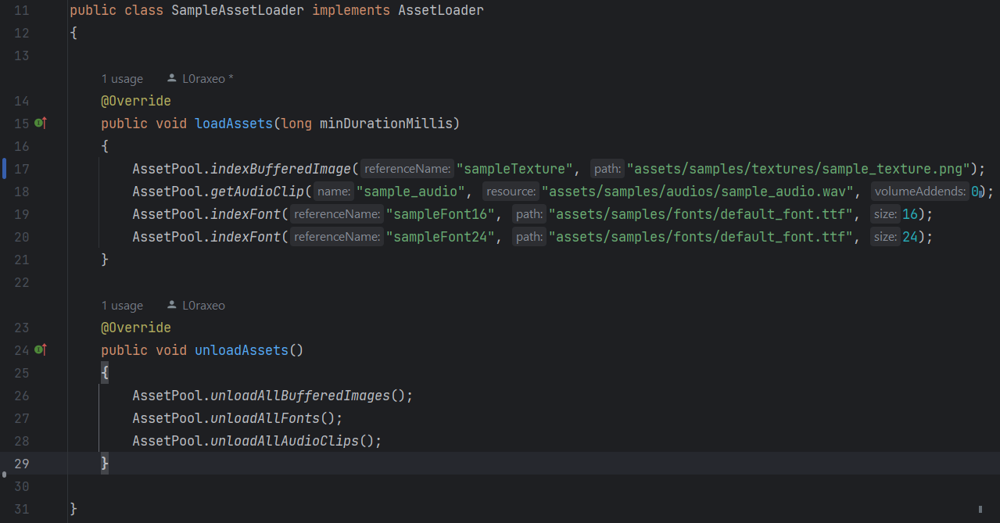
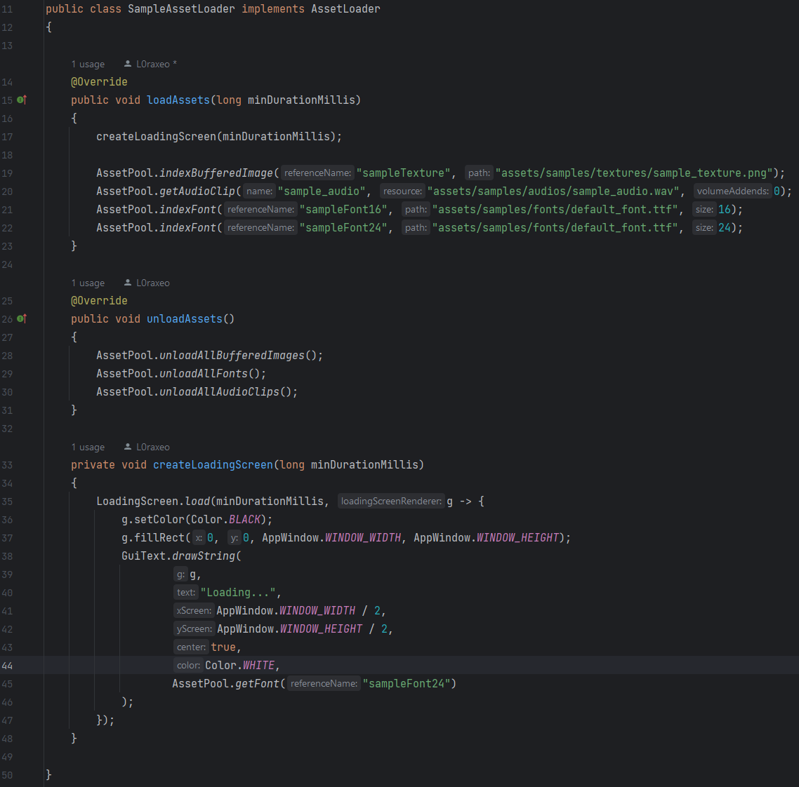

Asset Loaders are custom classes that implement the Asset Loader interface. The interface implements the loadAssets(minDurationMillis) and unloadAssets() methods. Asset Loaders are often used in conjunction with the Loading Screen class in order to hide lag. Asset Loaders solely load and unload assets from the Asset Pool. They are useful for staging your game. Instead of loading in your assets during the game, Asset Loaders condense that work into one stage in order to prevent future lag.
Example:
Example:
